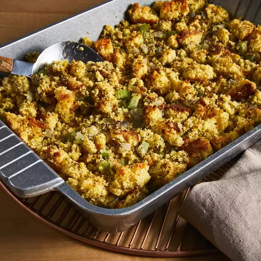

Cornbread Dressing Recipe

Description
This recipe for cornbread dressing will only take around 50 minutes to make including preparation and cooking time. It will come out to 8 servings of deliciousness! You will need a 7x11-inch baking dish. The macros per serving are 250 calories, 9g of fat, 38g of carbs, and 5g of protein. Once made the corn bread dressing is very easy to store. You can store it in an airtight container in the refrigerator for up to 4 days, and all you need to do is reheat it in the microwave or oven.
Ingredients
- 3 cups crumbled cornbread
- 2 tablespoons butter
- 1/2 cup chopped celery
- 2 large eggs, beaten
- 2 cups chicken stock
- 1 tablespoon dried sage
- salt and ground pepper for taste
Steps
- Gather all ingredients
- Preheat the oven to 350 degrees
- Grease your 7x11-inch baking dish
- Place crumbled cornbread into large bowl
- Melt butter in a large skillet over medium heat. Add onion and celery and sauté until soft, 5 to 7 minutes.
- Add sautéed onion and celery to the crumbled cornbread. Stir in chicken stock, eggs, sage, salt, and pepper until well combined. Pour dressing into the prepared baking dish.
- Bake in the preheated oven until dressing just starts to turn golden brown around the edges, about 30 minutes.
- Serve and enjoy!